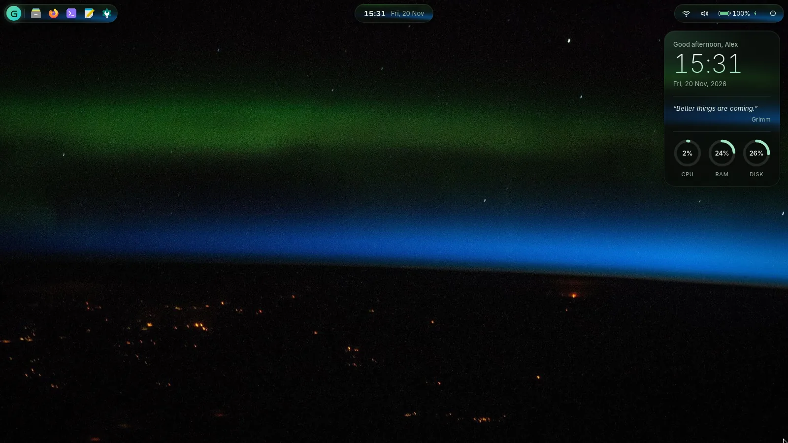
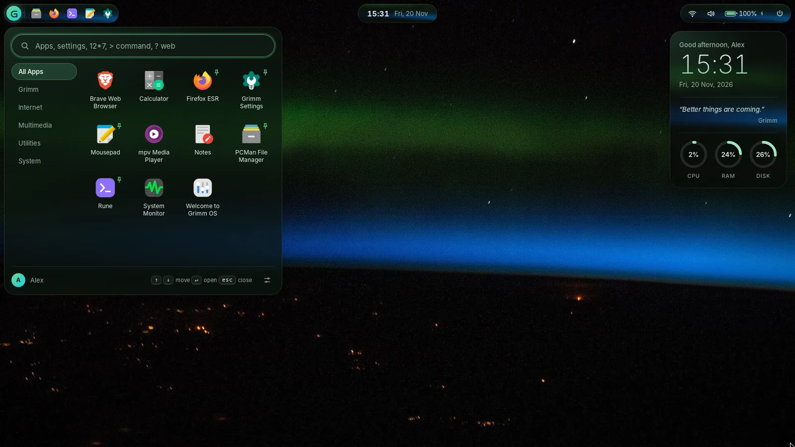
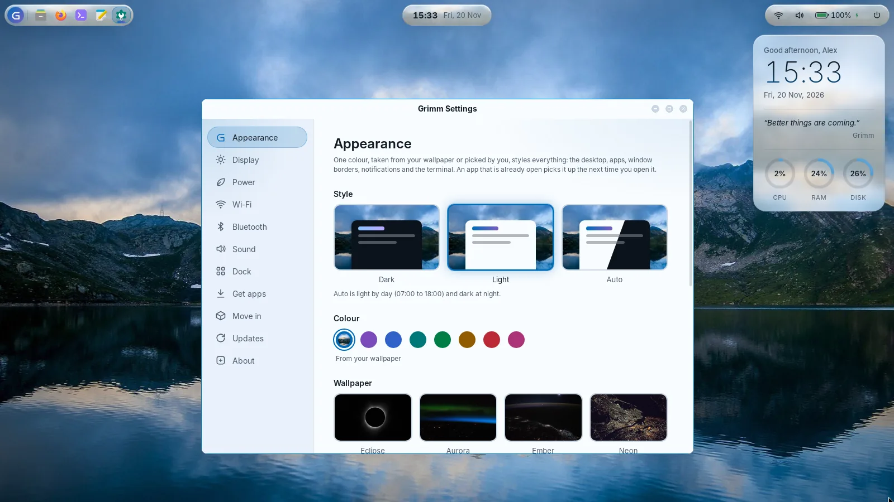
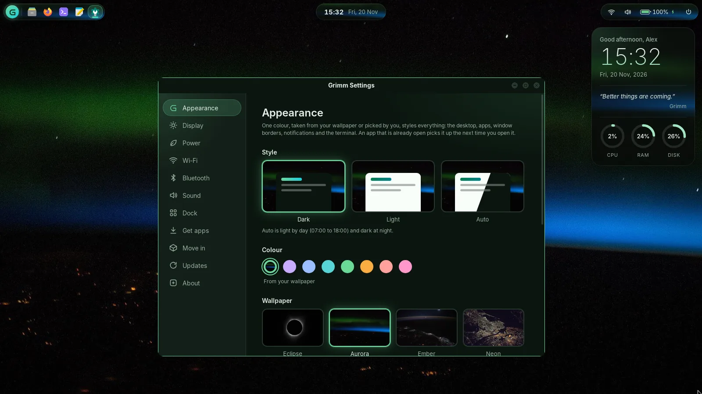
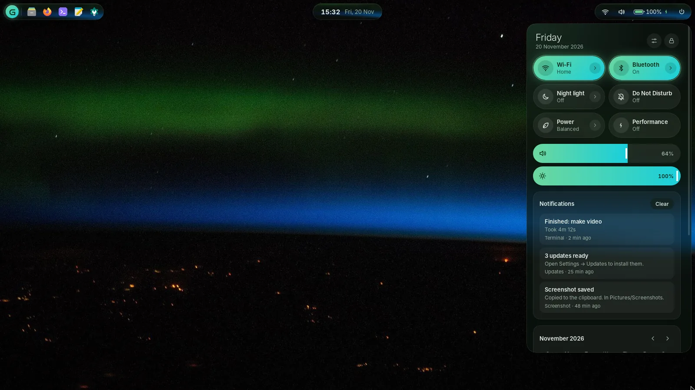

A new light
for old laptops.
Grimm OS is a free operating system for the laptop you already own. Its desktop, launcher and terminal were made from scratch, it idles at about one percent of a CPU, and nothing runs that you didn't ask for.
Most systems ask an old laptop to keep up. Grimm lets it rest. The desktop sleeps until you touch it, closed apps really close, and the look is spent where you see it: in motion when you act, and in stillness when you don't.
- ~1%
- CPU with the desktop idle, measured
- 230 MB
- for the whole desktop shell
- 4 GB
- of RAM is plenty
- 0
- ads, accounts or tracking
The desktop
No taskbar along the bottom, no dock on the side. Three islands float over your wallpaper and the rest of the screen belongs to your work.
- Apps. Your pinned apps and open windows, each with a glowing dot.
- Clock. Click it for the dashboard: Wi-Fi, sound, night light, notifications.
- Status. Network, battery and power, nothing more.
- Widget. Time, a line of your choosing and system gauges. It stops updating while a window covers it.
The launcher is a command bar
Press Super+Space and type. Open an app, jump to a setting, work out 2400*1.5%, run > a command, or search the web with ? a question.

One colour, everywhere
Grimm takes a colour from your wallpaper and builds the whole palette from it: the desktop, window borders, notifications, apps and the terminal. Drag across to change the light.


Everything else, one click away
Click the clock. Wi-Fi, Bluetooth, night light, Do Not Disturb and power modes are tiles; brightness is a slider; your notifications and a calendar sit underneath.

The living island
The clock in the middle grows to hold what matters right now, then springs back. What's playing, from YouTube to Spotify to a film, with its cover, title and controls. A turn of the volume or the brightness. The moment you plug in. It listens for these as they happen, so it costs nothing while nothing changes.
- The clock
- Something plays
- Under the mouse
- A volume key
- Plugged in
A working copy of the real island, running in your browser.
Rune, the terminal
Grimm's own terminal. Each tab shows its folder and git branch, a dot while a command runs and a tick or a cross when it finishes in the background. Split panes, search, and Super+` drops one down from the top. Commands you use often can be saved, even for a set number of runs.
~/projects/grimm-os main ❯ ,save "git pull --rebase" sync ◆ Saved "sync": git pull --rebase (unlimited uses) ~/projects/grimm-os main ❯ ,save "sudo apt upgrade" 1 update ◆ Saved "update": sudo apt upgrade (1 use) ~/projects/grimm-os main ❯ ,run sync ◆ git pull --rebase Already up to date. ✓ git pull --rebase · 2s
Under the hood
Grimm stands on Debian, one of the oldest and steadiest Linux systems, so apt and its tens of thousands of packages just work. Everything you see on top is Grimm's.
| Base | Debian 13 “trixie” | security updates install by themselves |
|---|---|---|
| Kernel | Linux 6.12 LTS | with Wi-Fi, graphics and sound firmware |
| Display | X11 · Openbox · picom 12 | rounded windows, shadows, spring motion |
| Shell | Python · GTK 3 · WebKitGTK | one process, event driven, no polling at rest |
| Terminal | Rune · VTE 2.91 | one process for every window |
| Installer | Calamares | keeps its log; skips failing disks |
| Idle CPU | ~1% | shell and renderer together, measured |
| Shell memory | ~230 MB | proportional set size, measured |
| Image | ~1.6 GB | 64-bit x86 (amd64), live and installer in one |
| Licence | GPL-3.0-or-later | source on GitHub |
Made in the open
Every version, built, booted and tested on a 2016 laptop with 4 GB of memory.
- 0.2The baseline: islands, dock, launcher, dashboard and the built-in apps.
- 0.3The launcher becomes a command bar. Web apps, Do Not Disturb, End task, quarter snapping.
- 0.4A welcome screen, photo wallpapers, and Move in from your old computer.
- 0.5First boot on real hardware.
- 0.7“Corona”: one colour from your wallpaper styles everything; spring motion; installed for real.
- 0.8Rune, Grimm's own terminal, saved commands, and apps that quit when you close them.
- 0.9The living island: what's playing, volume, brightness and charging, right in the clock.
Install it
About twenty minutes from download to desktop. You can try everything from the USB stick first without touching your disk.
- Downloadthe image (about 1.6 GB) and check its SHA-256 sum.
- Write it to a USB stickwith balenaEtcher, or copy it onto a Ventoy stick.
- Boot from the stickand try Grimm live. Wi-Fi, sound and the desktop all work.
- Click Installon the desktop, answer a few questions, and restart.
64-bit Intel or AMD2 GB RAM · 4 GB recommended20 GB disk · SSD feels bestAny graphics
Questions
Is it free?
Yes. It costs nothing, and its source code is open under the GNU GPL, version 3 or later. No ads, no accounts, no tracking.
Is it Linux?
Yes: the Linux kernel and Debian 13 underneath, so anything packaged for Debian installs with apt. Everything on top, from the boot splash to the terminal, is Grimm.
Will my Wi-Fi and sound work?
Grimm ships Debian's drivers and the common Wi-Fi, graphics and sound firmware. The live USB lets you check before you install anything.
Can I keep Windows?
The installer can put Grimm next to another system or replace it. Back up your files first either way.
Who makes it?
Sanskar Tiwari, who goes by Grimm. Grimm OS is not affiliated with or endorsed by the Debian Project.
Grimm OS 0.9
- Image
- grimm-os-0.9-amd64.iso
- Size
- ~1.6 GB
- Base
- Debian 13 · Linux 6.12
- SHA-256
- published with the image
Being preparedSource on GitHub